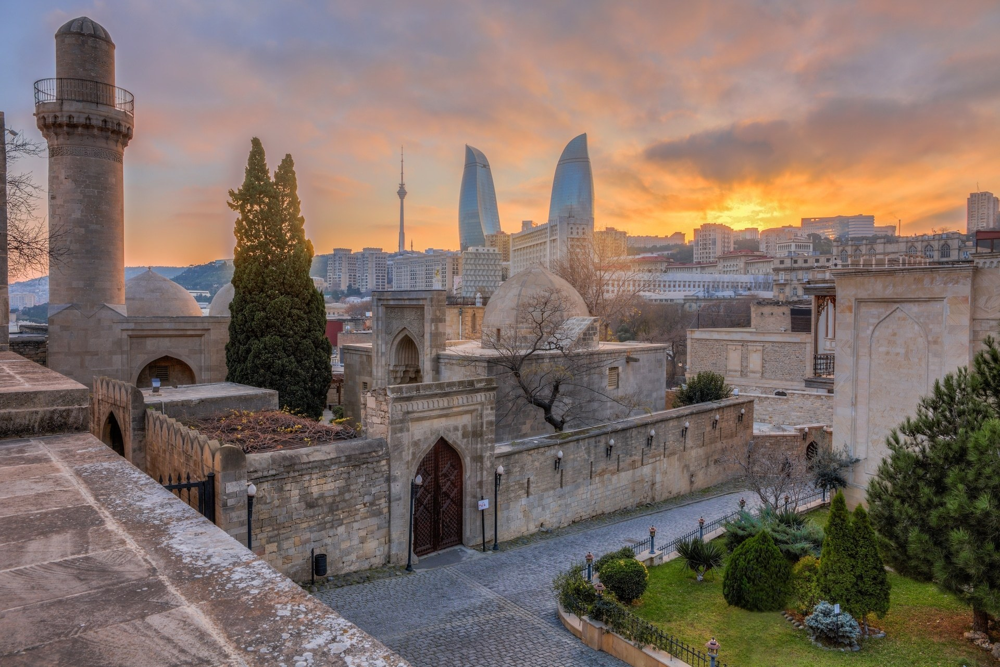
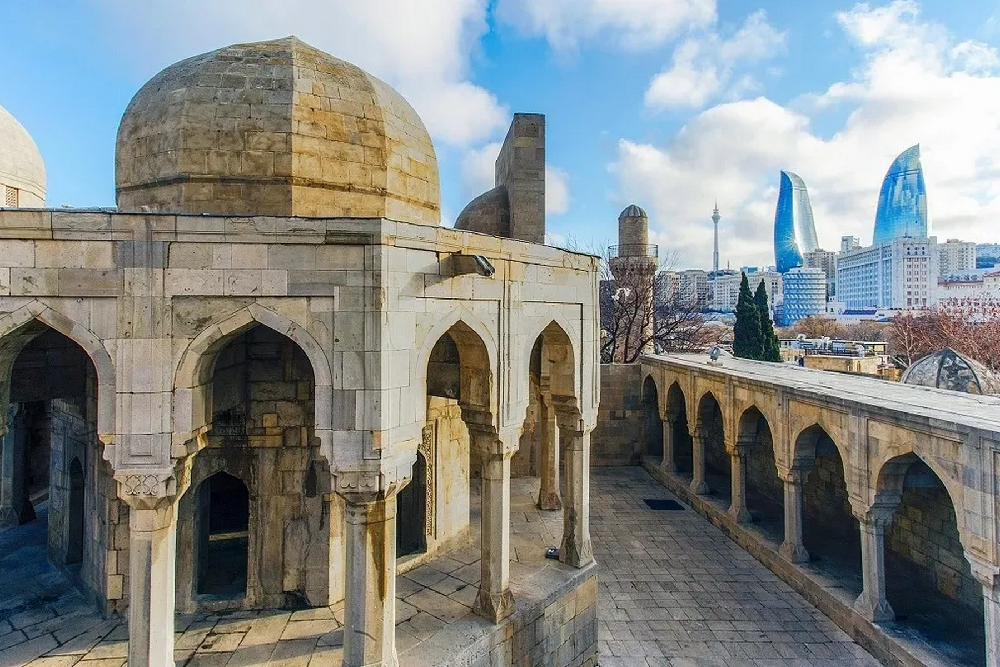
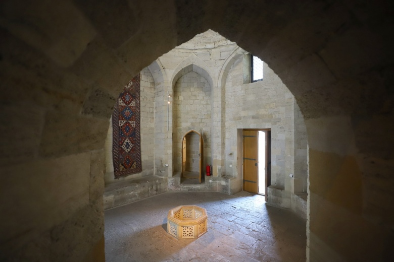
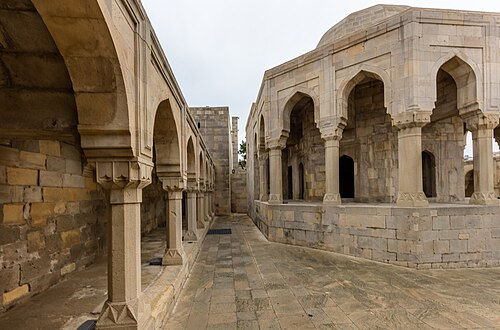

Tarihçesi
15yüzyılda Şirvanşah Halilullah tarafından yaptırılan saray, Azerbaycan'ın en değerli mimari miraslarından biridir. İçerişehir'de yer alır.
Mimari Yapı
Saray kompleksi; ana bina, cami, türbe, hamam ve sarnıç gibi birçok yapıdan oluşur. Taş işlemeleri oldukça detaylı ve zarif işlenmiştir.
UNESCO Listesi
1990'lı yıllarda UNESCO Dünya Mirası Listesi'ne alınmış ve korunmaya başlanmıştır. Bugün müze olarak hizmet vermektedir.


